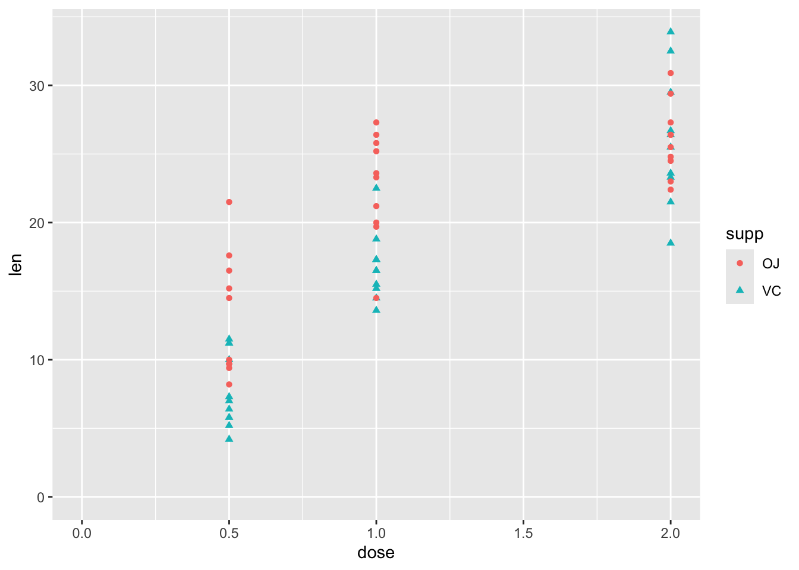
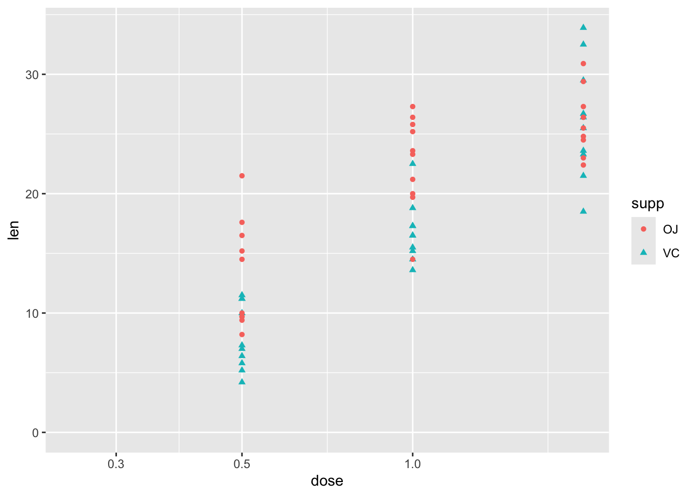
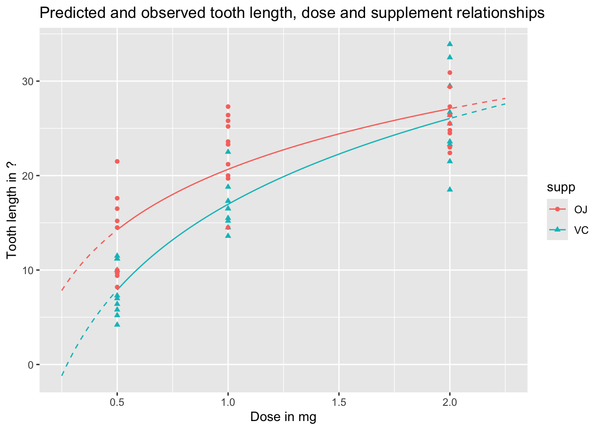
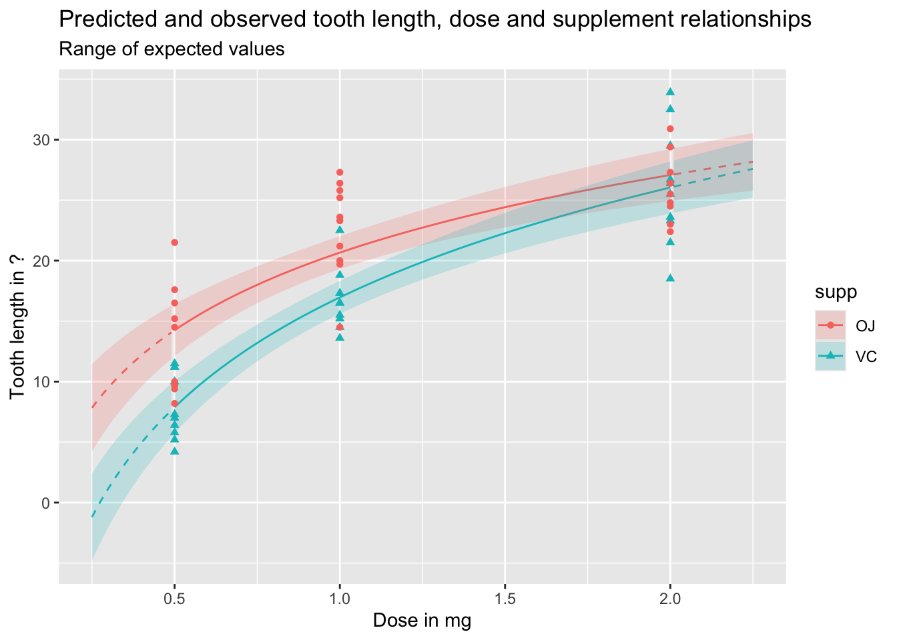
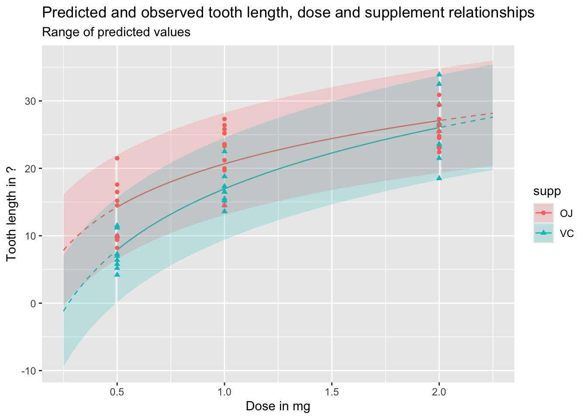

The first four posts in this series formed ‘section one’, in which the focus was on framing the challenge of fitting (almost) all statistical models from the perspective of likelihood theory; and how to go beyond ‘star-gazing’ (just look at tables of coefficients), and using statistical models to make predictions and projections that answer substantively useful questions of interest. The section closed with post four, in which the challenges of describing and producing effect estimates as quantities of interest when using logistic regression models was illustrated in some detail.
Section two, covering posts 5-10, then delved into more detail, about what likelihood theory is, and how R uses optimisation agorithms to try to solve loss functions based on likelihood to find the best combination of model parameters to represent the core relationships that exist between variables in a dataset. Within this, we identified how information and uncertainty (two sides of the same coin) about model parameters can be estimated using the Hessian, a measure of the instantaneous curvature around the position in the optimisation’s search space that maximises the log likelihood. It’s this measure of uncertainty, including joint uncertainty and correlation between predictor variables, that allows not just prediction and projection from models, but honest prediction and projection, allowing ‘what if?’ questions to be asked of a model that takes into account of parameter uncertainty.
Aim
The purpose of this post is to move onto a new section, section three, in which we will look at some of the ways that quantities of interest - expected values, predicted values, and first differences - can be answered with a fitted model honestly, i.e. accounting for parameter uncertainty.
Linear regression example
Let’s start with one of the built-in datasets, ToothGrowth, which is described as follows:
The response is the length of odontoblasts (cells responsible for tooth growth) in 60 guinea pigs. Each animal received one of three dose levels of vitamin C (0.5, 1, and 2 mg/day) by one of two delivery methods, orange juice or ascorbic acid (a form of vitamin C and coded as VC).
df |>ggplot(aes(y = len, x = dose, shape = supp, colour = supp)) +geom_point() +expand_limits(x =0, y =0)

So, although this has just three variables, there is some complexity involved in thinking about how the two predictor variables, supp and dose, relate to the response variable len. These include:
Whether the relationship between len and dose is linear in a straightforward sense, or associated in a more complicated wway
Whether supp has the same effect on len regardless of dose, or whether there is an interaction between dose and supp.
Stage one: model fitting
We can address each of these questions in turn, but should probably start with a model which includes both predictors:
Code
mod_01 <-lm(len ~ dose + supp, data = df)summary(mod_01)
Call:
lm(formula = len ~ dose + supp, data = df)
Residuals:
Min 1Q Median 3Q Max
-6.600 -3.700 0.373 2.116 8.800
Coefficients:
Estimate Std. Error t value Pr(>|t|)
(Intercept) 9.2725 1.2824 7.231 1.31e-09 ***
dose 9.7636 0.8768 11.135 6.31e-16 ***
suppVC -3.7000 1.0936 -3.383 0.0013 **
---
Signif. codes: 0 '***' 0.001 '**' 0.01 '*' 0.05 '.' 0.1 ' ' 1
Residual standard error: 4.236 on 57 degrees of freedom
Multiple R-squared: 0.7038, Adjusted R-squared: 0.6934
F-statistic: 67.72 on 2 and 57 DF, p-value: 8.716e-16
Each term is statistically significant at the conventional thresholds (P < 0.05), with higher doses associated with greater lengths. Compared to OJ, the reference category, a vitamin C (VC) supplement is associated with lower lengths.
Turning to the first question, about the type of relationship between len and dose, one possibility is that greater doses lead to greater lengths, but there are diminishing marginal returns: the first mg has the biggest marginal effect, then the second mg has a lower marginal effect. An easy way to model this would be to include the log of dose in the regression model, rather than the dose itself.1 We can get a sense of whether this log dose specification might be preferred by plotting the data with a log scale on the x axis, and seeing if the points look like they ‘line up’ better:
Code
df |>ggplot(aes(y = len, x = dose, shape = supp, colour = supp)) +geom_point() +scale_x_log10() +expand_limits(x =0.250, y =0)

Yes, with this scaling, the points associated with the three dosage regimes look like they line up better. Let’s now build this model specification:
Code
mod_02 <-lm(len ~log(dose) + supp, data = df)summary(mod_02)
Call:
lm(formula = len ~ log(dose) + supp, data = df)
Residuals:
Min 1Q Median 3Q Max
-6.2108 -2.9896 -0.5633 2.2842 9.1892
Coefficients:
Estimate Std. Error t value Pr(>|t|)
(Intercept) 20.6633 0.7033 29.38 < 2e-16 ***
log(dose) 11.1773 0.8788 12.72 < 2e-16 ***
suppVC -3.7000 0.9947 -3.72 0.000457 ***
---
Signif. codes: 0 '***' 0.001 '**' 0.01 '*' 0.05 '.' 0.1 ' ' 1
Residual standard error: 3.852 on 57 degrees of freedom
Multiple R-squared: 0.755, Adjusted R-squared: 0.7464
F-statistic: 87.81 on 2 and 57 DF, p-value: < 2.2e-16
Again, the same kind of relationship between variables is observed: higher log dose: greater length; and VC rather than OJ is associated with lower growth. But is this model actually any better? The model summary for the linear dose model gives an adjusted \(R^2\) of 0.69, whereas for the log dose model the adjusted \(R^2\) is 0.75. So, as the data are fundamentally the same,2 this suggests it is. However, as we know that linear regression models are really just another kind of generalised linear models, and that model fitting tends to involve trying to maximise the log likelihood, we can also compare the log likelihoods of the two models, using the logLik() function, and so which is higher:
Code
logLik(mod_01)
'log Lik.' -170.2078 (df=4)
Code
logLik(mod_02)
'log Lik.' -164.5183 (df=4)
Both report the same number of degrees of freedom (‘df’), which shouldn’t be suprising as they involve the same number of parameters. But the log likelihood for mod_02 is higher, which like the Adjusted R-squared metric suggests a better fit.
Another approach, which generalises better to other types of model, is to compare the AICs, which are metrics that try to show the trade off between model complexity (based on number of parameters), and model fit (based on the log likelihood). By this criterion, the lower the score, the better the model:
Code
AIC(mod_01, mod_02)
df AIC
mod_01 4 348.4155
mod_02 4 337.0367
As both models have exactly the same number of parameters, it should be of no surprise that mod_02 is still preferred.
Let’s now address the second question: is there an interaction between dose and supp. This interaction term can be specified in one of two ways:
Code
# add interaction term explicitly, using the : symbolmod_03a <-lm(len ~log(dose) + supp +log(dose) : supp, data = df)# add interaction term implicitly, using the * symbol mod_03b <-lm(len ~log(dose) * supp, data = df)summary(mod_03a)
Call:
lm(formula = len ~ log(dose) + supp + log(dose):supp, data = df)
Residuals:
Min 1Q Median 3Q Max
-7.5433 -2.4921 -0.5033 2.7117 7.8567
Coefficients:
Estimate Std. Error t value Pr(>|t|)
(Intercept) 20.6633 0.6791 30.425 < 2e-16 ***
log(dose) 9.2549 1.2000 7.712 2.3e-10 ***
suppVC -3.7000 0.9605 -3.852 0.000303 ***
log(dose):suppVC 3.8448 1.6971 2.266 0.027366 *
---
Signif. codes: 0 '***' 0.001 '**' 0.01 '*' 0.05 '.' 0.1 ' ' 1
Residual standard error: 3.72 on 56 degrees of freedom
Multiple R-squared: 0.7755, Adjusted R-squared: 0.7635
F-statistic: 64.5 on 3 and 56 DF, p-value: < 2.2e-16
Code
summary(mod_03b)
Call:
lm(formula = len ~ log(dose) * supp, data = df)
Residuals:
Min 1Q Median 3Q Max
-7.5433 -2.4921 -0.5033 2.7117 7.8567
Coefficients:
Estimate Std. Error t value Pr(>|t|)
(Intercept) 20.6633 0.6791 30.425 < 2e-16 ***
log(dose) 9.2549 1.2000 7.712 2.3e-10 ***
suppVC -3.7000 0.9605 -3.852 0.000303 ***
log(dose):suppVC 3.8448 1.6971 2.266 0.027366 *
---
Signif. codes: 0 '***' 0.001 '**' 0.01 '*' 0.05 '.' 0.1 ' ' 1
Residual standard error: 3.72 on 56 degrees of freedom
Multiple R-squared: 0.7755, Adjusted R-squared: 0.7635
F-statistic: 64.5 on 3 and 56 DF, p-value: < 2.2e-16
We can see from the summaries that both ways of specifying the models lead to exactly the same model, with exactly the same estimates, standared errors, adjusted \(R^2\)s, and so on. The adjusted \(R^2\) is now 0.76, a slight improvement on the 0.75 value for the model without the interaction term. As before, we can also compare the trade-off between additional complexity and improved fit using AIC
Code
AIC(mod_02, mod_03a)
df AIC
mod_02 4 337.0367
mod_03a 5 333.7750
So, the AIC of the more complex model is lower, suggesting a better model, but the additional improvement in fit is small.
We can also compare the fit, and answer the question of whether the two models can be compared, in a couple of other ways. Firstly, we can use BIC, AIC’s (usually) stricter cousin, which tends to penalise model complexity more harshly:
Code
BIC(mod_02, mod_03a)
df BIC
mod_02 4 345.4140
mod_03a 5 344.2467
Even using BIC, the more complex model is still preferred, though the difference in values is now much smaller.
The other way we can compare the models is using an F-test using the anova (analysis of variance) function:
Code
anova(mod_02, mod_03a)
Analysis of Variance Table
Model 1: len ~ log(dose) + supp
Model 2: len ~ log(dose) + supp + log(dose):supp
Res.Df RSS Df Sum of Sq F Pr(>F)
1 57 845.91
2 56 774.89 1 71.022 5.1327 0.02737 *
---
Signif. codes: 0 '***' 0.001 '**' 0.01 '*' 0.05 '.' 0.1 ' ' 1
Here anova compares the two models, notes that the first model can be understood as a restricted variant of the second model,3 and compares the change in model fit between the two models against the change in number of parameters used to fit the model. The key parts of the summary to look at are the F test value, 5.13, and the associated P value, which is between 0.01 and 0.05. This, again, suggests the interaction term is worth keeping.
So, after all that, we finally have a fitted model. Let’s look now at making some predictions from it.
Stage Two: Model predictions
The simplest approach to getting model predictions is to use the predict function, passing it a dataframe of values for which we want predictions:
We can visualise these predictions as follows, with the predicted values as lines, and the observed values as points:
Code
preds_predictors_df |>mutate(interextrap =case_when( dose <0.5~"extrap_below", dose >2.0~"extrap_above",TRUE~"interp" ) ) |>ggplot(aes(x = dose, y = pred_len, colour = supp, linetype = interextrap)) +geom_line() +scale_linetype_manual(values =c(`interp`='solid', `extrap_below`='dashed', `extrap_above`='dashed'), guide ='none') +geom_point(aes(x = dose, y = len, group = supp, colour = supp, shape = supp), inherit.aes =FALSE, data = df ) +labs(x ="Dose in mg",y ="Tooth length in ?",title ="Predicted and observed tooth length, dose and supplement relationships" )

In the above, I’ve shown the lines as solid when they represent interpolations of the data, i.e. are in the range of measured doses, and as dashed when they represent extrapolations from the data, meaning they are are predictions made outside the range of observed values. We can see an obvious issue when we extrapolate too far to the left: for low doses, and for the VC supplement, the model predicts negative tooth lengths. Extrapolation is dangerous! And gets more dangerous the further we extrapolate from available observations.
We can also use the predict function to produce uncertainty intervals, either of expected values, or predicted values. By default these are 95% intervals, meaning they are expected to contain 95% of the range of expected or predicted values from the model.
Let’s first look at expected values, which include uncertainty about parameter estimates, but not observed variation in outcomes:
Code
df_pred_intvl <-predict(mod_03a, newdata = predictor_df, interval ="confidence")preds_predictors_intervals_df <-bind_cols(predictor_df, df_pred_intvl)preds_predictors_intervals_df |>mutate(interextrap =case_when( dose <0.5~"extrap_below", dose >2.0~"extrap_above",TRUE~"interp" ) ) |>ggplot(aes(x = dose, linetype = interextrap)) +geom_line(aes(y = fit, colour = supp)) +geom_ribbon(aes(ymin = lwr, ymax = upr, fill = supp), alpha =0.2) +scale_linetype_manual(values =c(`interp`='solid', `extrap_below`='dashed', `extrap_above`='dashed'), guide ='none') +geom_point(aes(x = dose, y = len, group = supp, colour = supp, shape = supp), inherit.aes =FALSE, data = df ) +labs(x ="Dose in mg",y ="Tooth length in ?",title ="Predicted and observed tooth length, dose and supplement relationships",subtitle ="Range of expected values" )

And the following shows the equivalent prediction intervals, which also incorporate known variance, as well as parameter uncertainty:
Code
df_pred_intvl <-predict(mod_03a, newdata = predictor_df, interval ="prediction")preds_predictors_intervals_df <-bind_cols(predictor_df, df_pred_intvl)preds_predictors_intervals_df |>mutate(interextrap =case_when( dose <0.5~"extrap_below", dose >2.0~"extrap_above",TRUE~"interp" ) ) |>ggplot(aes(x = dose, linetype = interextrap)) +geom_line(aes(y = fit, colour = supp)) +geom_ribbon(aes(ymin = lwr, ymax = upr, fill = supp), alpha =0.2) +scale_linetype_manual(values =c(`interp`='solid', `extrap_below`='dashed', `extrap_above`='dashed'), guide ='none') +geom_point(aes(x = dose, y = len, group = supp, colour = supp, shape = supp), inherit.aes =FALSE, data = df ) +labs(x ="Dose in mg",y ="Tooth length in ?",title ="Predicted and observed tooth length, dose and supplement relationships",subtitle ="Range of predicted values" )

As should be clear from the above, and discussion of the difference between expected and predicted values in previous posts, predicted values and expected values are very different, and it is important to be aware of the difference between these two quantities of interest. Regardless, we can see once again how dangerous it is to use this particular model specification to extrapolate beyond the range of observations, expecially for lower doses.
Summary and coming up
In this post, we’ve started and finished building the model, and started but not quite finished using the model to generate expected and predicted values. We’ve discussed some approaches to deciding on a model specification, by incrementally comparing a series of different specifications which test different ideas we have about how the predictor variables might be related to each other, and to the response variable.
As we’ve done quite a lot of work on building the model, we’ve not covered everything that I was planning to in terms of model prediction, and what we can do with a linear regression model (and generalised linear regression model), beyond (yawn) stargazing, for using models to get expected values, predicted values, and especially first differences. So, I guess that’s coming up in the next post!
Footnotes
The difference between 0.5mg and 1.0mg is 0.5mg, but it’s also one doubling. The difference between 1.0mg and 2.0mg is 1.0mg, but it’s also one doubling. The effect of logging dose is to space the values by the number of doublings, not the absolute difference.↩︎
These metrics can be used to compare different linear regression model specifications which use the same dataset, but should not be used to compare the same or different model specifications as applied to different datasets. Some data, and the data generating processes (i.e. reality) that produce them, are just inherently more variable than others, and no amount of model calibration or additional data will be able to address this.↩︎
In this example, our more complex model has coefficients fit from the data for the intercept, log(dose), supp and the interaction term log(dose):supp, whereas the less complex model has coefficients fit from the data for the intercept, log(dose), and supp. This means the less complex model can be specified as a restricted version of the more complex model, where the value of the coefficient on the interaction term log(dose):supp is set to be equal to zero, rather than determined from the data. An equivalent way of phrasing and thinking about this is that the two model specifications are nested, with the restricted model nested inside the unrestricted model, which includes the interaction term. It’s this requirement for models to be nested in this way which meant that mod_01 and mod_02 could not be compared using an F-test, as neither model could be described strictly as restricted variants of the other model: they’re siblings, not mothers and daughters. However, both mod_01 and mod_02could be compared against a common ancestor model which only includes the intercept term.↩︎